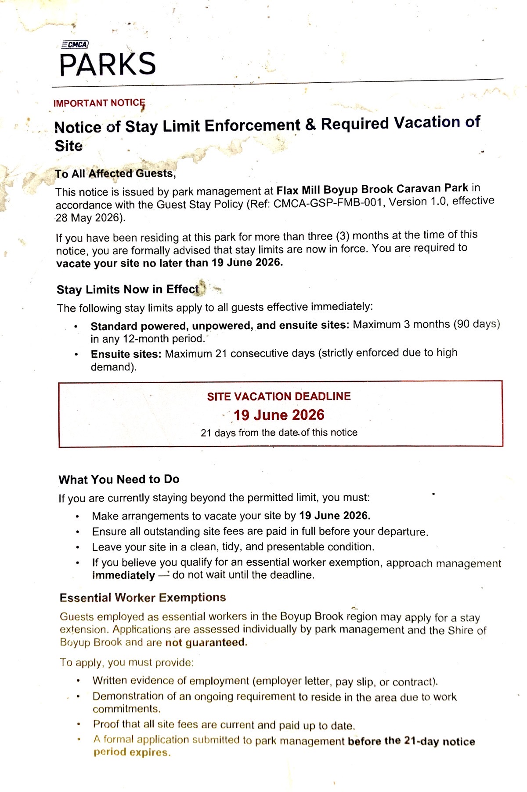

Timeline
- August 2025 — CMCA's caretaker first reports residents seeking longer-term accommodation because of the housing shortage; this recurs in nearly every monthly report through to April 2026.
- 28 May 2026 — Council adopts the CMCA Guest Stay Policy (Item 10.4.2, Decision CM 26/05/117). The minutes state "CMCA has developed a formal Guest Stay Policy" for the park, and list the consultation for the item as the Manager of Business & Development (CMCA), the Chief Executive Officer and the Environmental Health Officer. The vacation notices are issued, valid from this date, giving residents 21 days to leave.
- 19 June 2026 — Site vacation deadline set by the notices.
- 25 June 2026 — Public Question Time at the Ordinary Council Meeting.